This board mirrors the intended Figma file structure page by page.
Every artboard is an import-ready SVG (components/), text stays live (Archivo + IBM Plex Mono
ship with Figma), fills use the exact token hexes. Build order: variables from tokens →
styles → components from these boards → publish library.
00 · Foundations
Colour, type, spacing, keylines, angles, motion — see tokens.css / tokens.json (03_tokens). Import via Tokens Studio plugin.
Surface budget per view — Signal 1–3% is a ceiling, not a target.
INK #0A0A0A
20–30%
PAPER #FFFFFF
60–70%
G1 #F4F4F2
G2 #E6E6E3
G3 #6E6E6A
SIGNAL #FF4B00
states only
PDF-canonical palette. The brief’s warm list (#111111/#F5F3EE…) was superseded by the PDF decision record — see 03_tokens/README.md.
01 · Header & Navigation
Instrument rail language: symbol 24px, mono index, status capsule. Numbered sections 00–08.
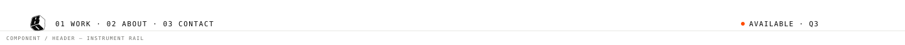
Header — instrument railSymbol 24px · mono index · status capsule right (Signal dot = accepting work, G3 = booked). Collapses to 48px bar on scroll; never a hamburger on desktop.
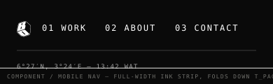
Mobile nav — ink stripFull-screen ink plate folds down (T_PAGE), not a side drawer; fold direction matches the mark.Section numberingNumbered-section architecture 00–08; numeral in Archivo 850, register line in mono. Never recoloured.
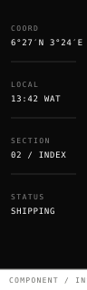
Instrument railRight-edge column minus 40px; carries coordinates, clock, section index. Mirrors left in RTL.
02 · Project & Index
The portfolio atom: plate + metadata + Expanded title + claim. Hover = fold-crop + Signal OPEN chip.
Metadata rowMono caps, middle dots + em dashes, never pipes. 55–70% ink.
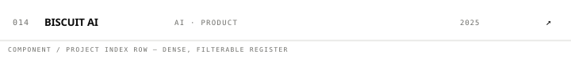
Project index rowRegister format: index / title / discipline / year. Filters = 8 discipline chips, outline rest, filled active.
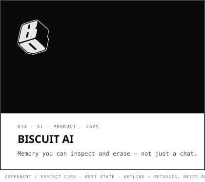
Project card — restPlate + mono metadata + Expanded title + one-line claim (provable assertion). No shadows, ever.
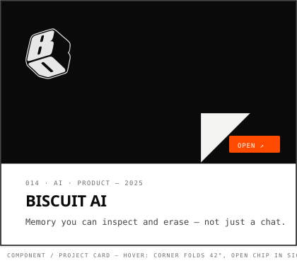
Project card — hoverPlane lifts 2px, corner cuts 42°, Signal OPEN chip appears. On touch: press state.
03 · Actions
Mono caps labels, radius 2px, ≥44px targets. Verbs with objects. Signal only as OPEN chip / live dot.
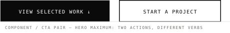
CTA pairHero offers exactly two actions, different verbs. One CTA per view wins; two maximum.
Button — destructiveKeyline + Signal label; confirmed by typed word — no red modal floods.LinkDash underline fills left→right in 120ms. Links at rest never Signal.Status capsuleLive dot pulses while accepting work (state has a reason); G3 when booked.
04 · Forms & States
Direction B systemic states: dash loaders, terminal-print success, ink-plate errors with one recovery action.
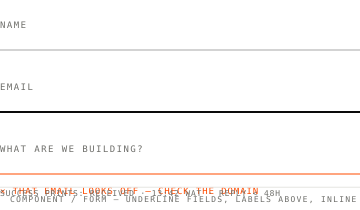
Form / inputUnderline fields on ink plates, hairline on paper; validation inline mono + dash marker in Signal; success prints like terminal output.
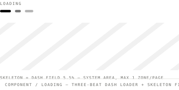
Loading stateDirection B: capsules fill left→right while a mono readout reports state. Reduced motion: static 42% fill.
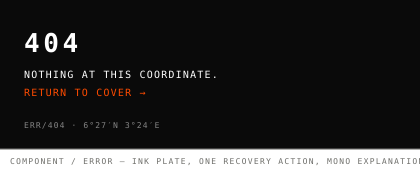
Error stateErrors are states with recovery paths, never aesthetics. Ink plate + mono + one action.
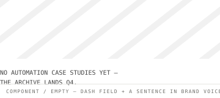
Empty stateDash field + honest sentence. Never an illustration mascot.
05 · Media & Case Studies
Fixed five-plate anatomy: 01 BRIEF · 02 SYSTEM · 03 BUILD · 04 PROOF · 05 OPERATE (Signal-indexed). Same structure, every project.
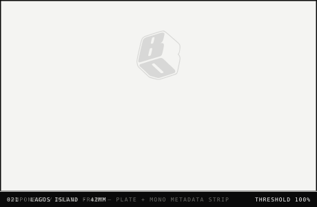
Media frame1.5px keyline plate, 0 offset; metadata strip carries index / subject / lens. Images: threshold mono, fold-crop edges.
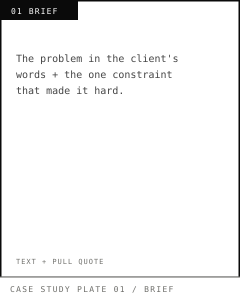
Case plate 01 — BriefFixed five-plate anatomy; depth comparable across projects.
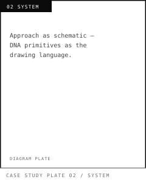
Case plate 02 — SystemFixed five-plate anatomy; depth comparable across projects.
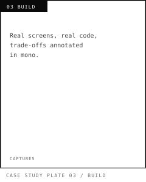
Case plate 03 — BuildFixed five-plate anatomy; depth comparable across projects.
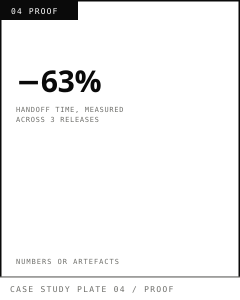
Case plate 04 — ProofFixed five-plate anatomy; depth comparable across projects.
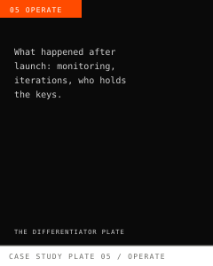
Case plate 05 — OperateFixed five-plate anatomy; depth comparable across projects; Signal-indexed — the differentiator.
06 · Architecture
Master brand carries everything; products are endorsed guests. Disciplines are metadata, never logos.
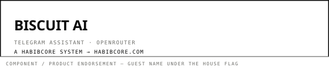
Product endorsementProducts keep their own name, inherit keyline + type, carry “a HABIBCORE system” + master footer. No product logos, no sub-brands.
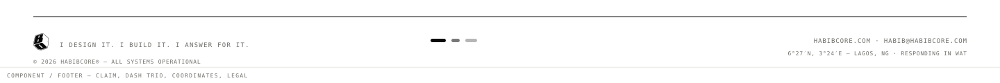
FooterClaim line + three-beat dash + coordinates + legal mono. Scroll progress = dash filling in the rail.